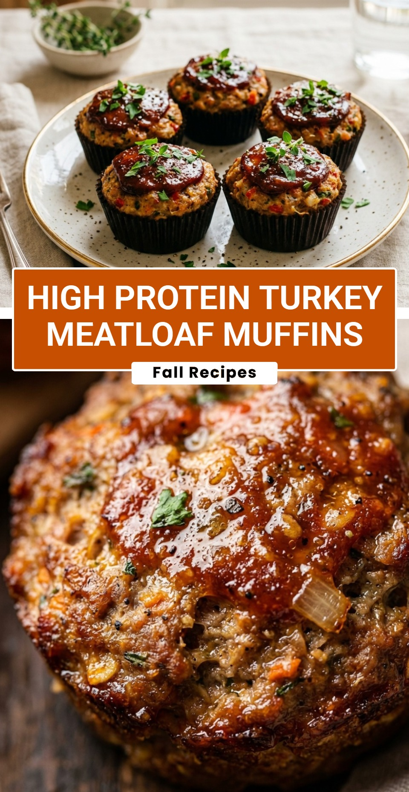

High Protein Turkey Meatloaf Muffins
October 18, 2026

Finding a healthy, satisfying meal that fits into a busy lifestyle can be a challenge. These High Protein Turkey Meatloaf Muffins are the ultimate solution for anyone looking to stay on track with their fitness goals without sacrificing flavor. They are perfectly portioned, packed with lean protein, and incredibly easy to grab on the go. Whether you are meal prepping for the week or looking for a family-friendly dinner, these savory muffins are sure to become a staple in your kitchen.
Recipe Information
Prep Time: 15 minutes
Cook Time: 25 minutes
Total Time: 40 minutes
Servings: 12 muffins
Difficulty Level: Easy
Nutrition Information
Calories per serving: 145 kcal
Protein: 18g
Carbohydrates: 7g
Fat: 5g
Fiber: 1g
Sugar: 3g
Sodium: 310mg